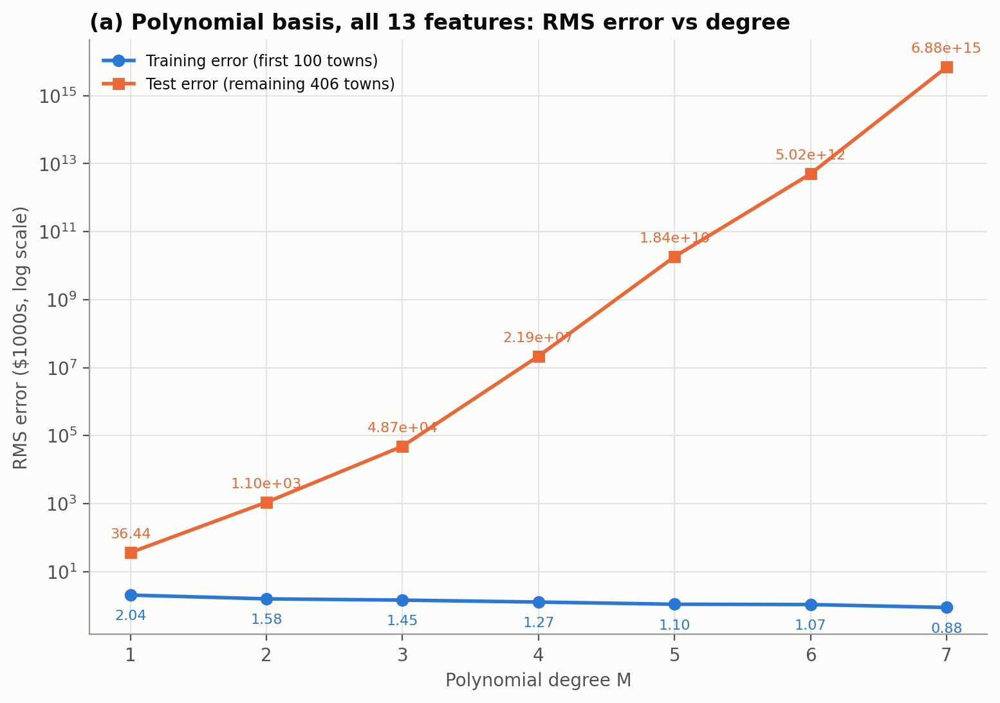
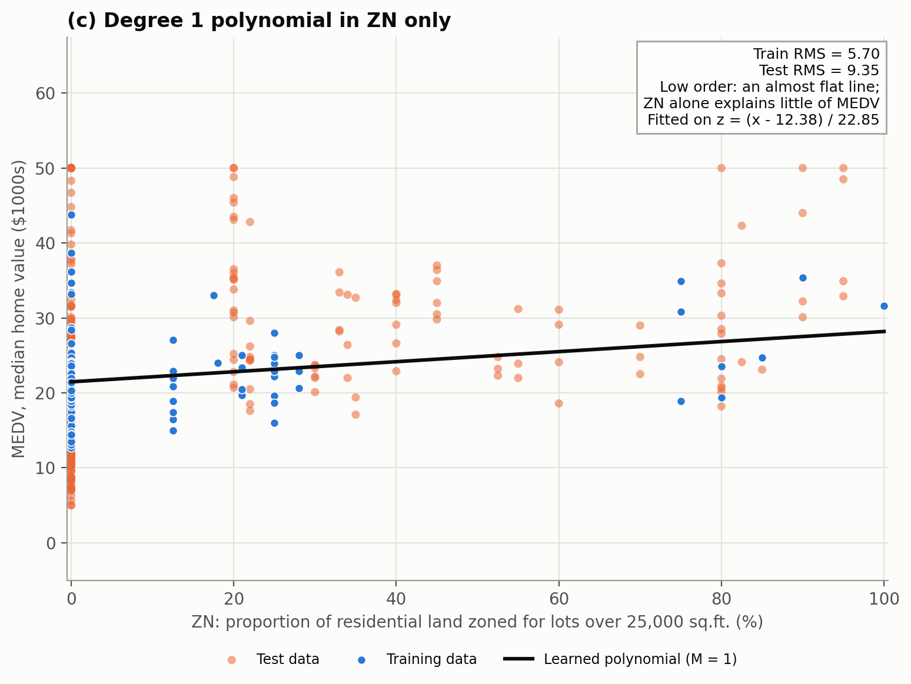
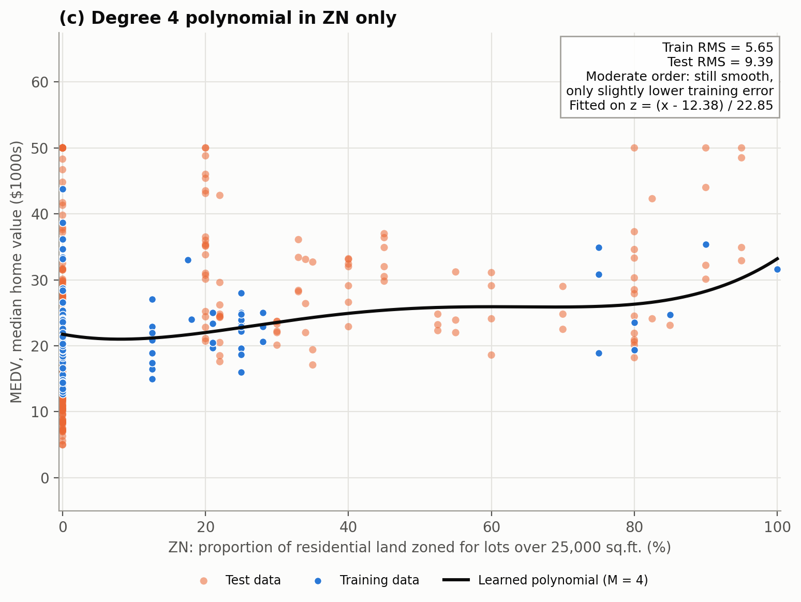
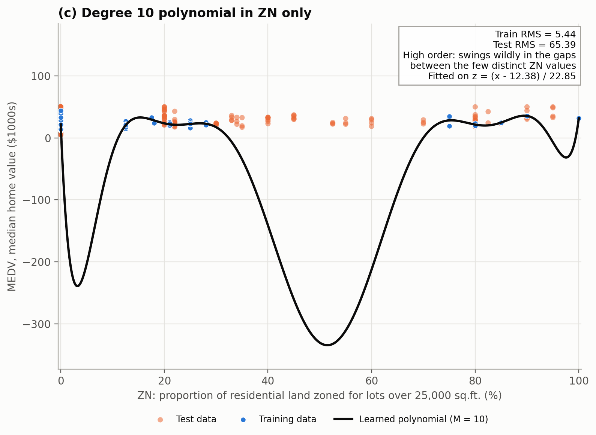
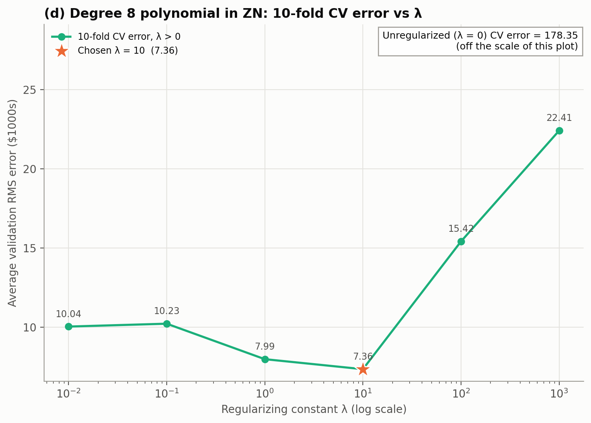
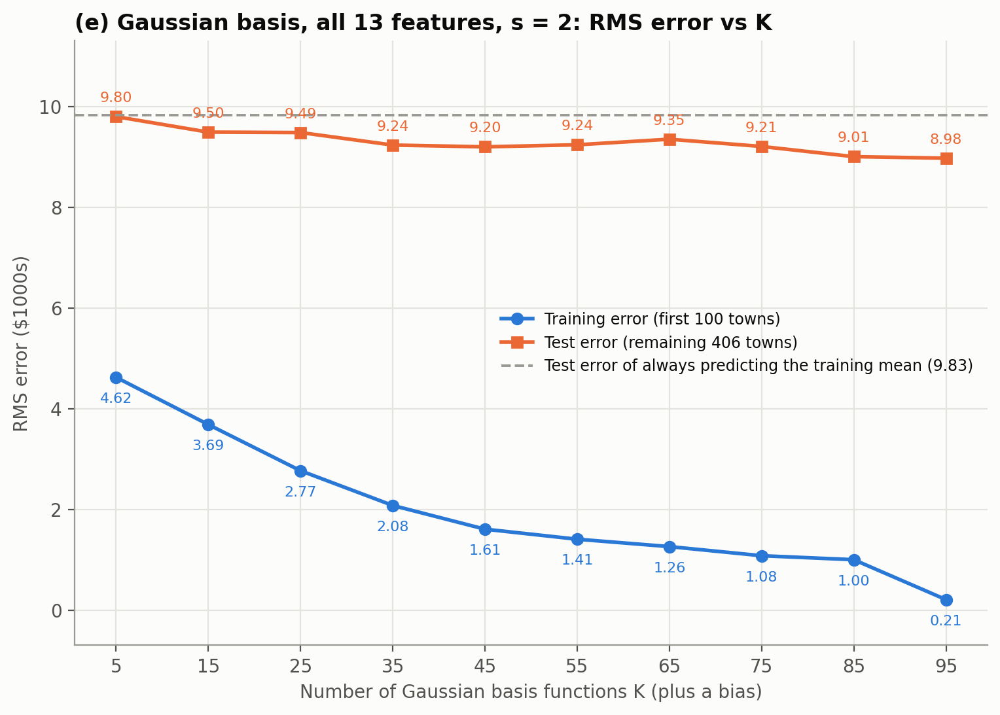
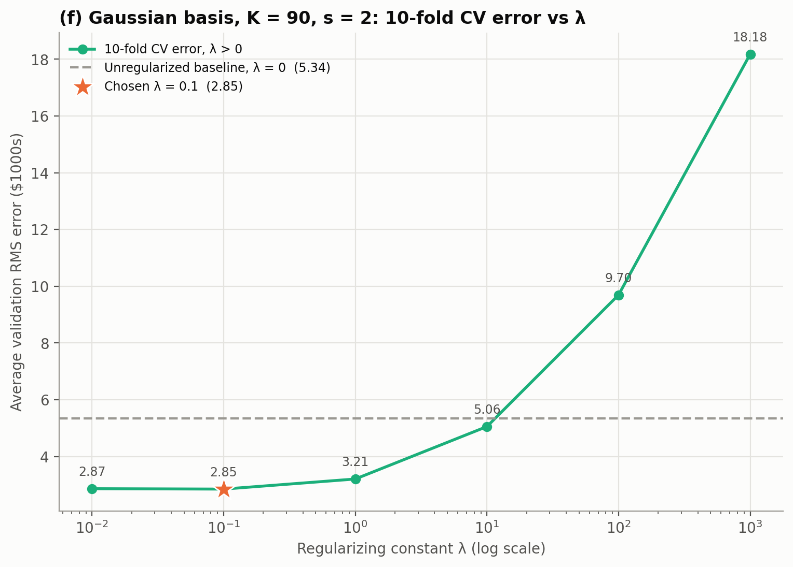

Both parts predict MEDV, the median home value of a town in $1000s, from the 13 features of the Boston Housing data using linear basis function regression. Part 1 uses polynomial basis functions and Part 2 uses Gaussian basis functions. Each part fits the model without regularization and then with L2 regularization, choosing λ by 10-fold cross-validation, in Python.
Files:
polynomial_regression (a), degree_one_weights (b), polynomial_regression_1d_vis (c), polynomial_regression_reg (d)gaussian_regression (e), gaussian_regression_reg (f)The data has 506 towns and 13 features: CRIM, ZN, INDUS, CHAS, NOX, RM, AGE, DIS, RAD, TAX, PTRATIO, B and LSTAT. As instructed, the first 100 towns are the training set and the remaining 406 are the test set. Each feature is converted to z = (x − mean)/SD using the mean and SD (standard deviation) of the 100 training towns only to avoid data leakage, and the same values are applied to the test towns. Inside cross-validation, the mean and SD are recomputed from each fold's training part. CHAS is 0 for all 100 training towns, so its SD of 0 is replaced by 1; it is then constant in training and gets a weight of 0. MEDV is not normalized, so all errors are in $1000s.
For regression, the prediction is a linear combination of K basis functions, with φ0(x) = 1 as the bias:
y_hat = f(x) = Σ_k w_k φ_k(x) = φ(x)^T w y_hat = Φ^T w, Φ = [φ(x_1), ..., φ(x_N)]The polynomial basis uses only monomials of a single feature, with no cross-terms, so a degree M model has 1 + 13M weights:
φ(x) = [1, x_1..x_13, x_1^2..x_13^2, ..., x_1^M..x_13^M]Without regularization the weights minimize the squared error and are found with the pseudo-inverse. With L2 regularization the ridge solution from the slides is used, so every weight, including the bias w0, is penalized:
λ = 0: w* = (ΦΦ^T)^-1 Φy = (Φ^T)^- y λ > 0: J(w) = 1/2 ||y − Φ^T w||^2 + λ/2 ||w||^2 ⇒ w* = (ΦΦ^T + λI)^-1 ΦyAll errors are RMS errors:
E_RMS = √( (1/N) Σ (y_hat_i − y_i)^2 )For 10-fold cross-validation, the 100 training towns are shuffled once (seed 0) and split into 10 folds of 10. Each fold is used once as the validation set while the model is trained on the other 90, and the cross-validation error is the average of the 10 validation RMS errors. The same folds are used for every λ.

Figure 1. Training and test RMS error for polynomial degree 1 to 7, all 13 features, no regularization (log scale).
| Degree M | 1 | 2 | 3 | 4 | 5 | 6 | 7 |
|---|---|---|---|---|---|---|---|
| Number of weights | 14 | 27 | 40 | 53 | 66 | 79 | 92 |
| Training RMS | 2.04 | 1.58 | 1.45 | 1.27 | 1.10 | 1.07 | 0.88 |
| Test RMS | 36.4 | 1.10e3 | 4.87e4 | 2.19e7 | 1.84e10 | 5.02e12 | 6.88e15 |
The training error falls every time the degree increases (2.04 to 0.88), because each higher-degree model contains the lower-degree one and has more weights to fit the 100 training towns. The test error does the opposite, it is already 36.4 at M = 1 and grows to 6.9×1015 at M = 7. This is overfitting, made much worse by extrapolation. The first 100 towns are not representative of the rest. For example, CRIM is at most 1.61 in the training towns but reaches 89.0 in the test towns, which is 229 standard deviations above the training mean. A polynomial raises that value to the M-th power, so the predictions for those towns become enormous. At higher degrees the design matrix is also rank-deficient (rank 66 of 92 columns at M = 7), because CHAS is constant and RAD and ZN take only 6 and 12 distinct values in the training towns; the pseudo-inverse handles this.
W is the learned weight on the normalized feature. It represents the change in predicted MEDV ($1000s) for a one-standard-deviation increase in that feature, with the other features held fixed. Undoing the normalization, ŷ = w0 + Σ wj(xj − meanj)/SDj, so the weight per raw unit is wj/SDj and the raw intercept is w0 − Σ wj meanj/SDj.
| Feature | Training mean | Training SD | w (normalized) | w/SD (per raw unit) |
|---|---|---|---|---|
| w0 (bias) | – | – | 22.309 | −37.904 (intercept) |
| 1. CRIM | 0.283 | 0.387 | −1.338 | −3.456 |
| 2. ZN | 12.385 | 22.852 | 0.123 | 0.00538 |
| 3. INDUS | 6.669 | 3.147 | −0.531 | −0.169 |
| 4. CHAS | 0 | 0 (set to 1) | 0 | 0 |
| 5. NOX | 0.471 | 0.047 | 1.003 | 21.515 |
| 6. RM | 6.234 | 0.488 | 4.196 | 8.591 |
| 7. AGE | 56.252 | 27.339 | −2.166 | −0.0792 |
| 8. DIS | 5.177 | 1.405 | 0.0107 | 0.00763 |
| 9. RAD | 3.960 | 1.385 | −0.194 | −0.140 |
| 10. TAX | 289.49 | 45.692 | −0.349 | −0.00763 |
| 11. PTRATIO | 18.690 | 1.690 | 0.261 | 0.155 |
| 12. B | 385.30 | 27.250 | 0.181 | 0.00664 |
| 13. LSTAT | 10.773 | 5.671 | 0.149 | 0.0262 |
RM (average rooms per dwelling): w = 4.196, or 8.59 per room. With everything else fixed, one more room per dwelling raises the predicted median value by about $8,600. This is the largest weight in the model and it is reasonable since larger homes are worth more, and RM has the strongest correlation with MEDV in the training towns (r = 0.85).
DIS (weighted distance to five Boston employment centers): w = 0.0107, or 0.0076 per unit of distance. This is essentially zero, so the model says distance to jobs has no effect on value once the other features are known. That is not very believable. If all other features are held fixed, towns farther from employment centers should be worth less. The 100 training towns are nearby suburbs with a narrow range of DIS, and DIS moves together with low crime, low NOX and newer housing, which the model has already given credit to. Fitting the same model to all 506 towns gives a clearly negative DIS weight (−3.10 normalized), which is what one would expect.
The single feature used is the 2nd one, ZN (proportion of residential land zoned for lots over 25,000 sq.ft.). Only ZN is used, normalized with the training mean 12.385 and SD 22.852. Degrees 1 to 10 were fitted with no regularization; each plot shows the training towns, the test towns and the learned polynomial (axis in raw units). ZN is 0 for 63 of the 100 training towns and takes only 12 distinct values, but the training towns cover the full range 0 to 100, so no test town lies outside it.

Figure 2. M = 1 (low order). An almost flat line, rising from about 21 to 28 across the range of ZN. ZN on its own explains little of the variation in MEDV, so the training error (5.70) is high, but the line generalizes as well as any of the fits (test RMS 9.35).

Figure 3. M = 4 (moderate order). The curve is still smooth and close to the line; the extra terms barely lower the training error (5.65) and the test error is essentially unchanged (9.39). Degrees 1 to 6 all behave like this.

Figure 4. M = 10 (high order). The polynomial can only bend freely in the gaps between the few distinct ZN values (for example between 30 and 75, where there are no training towns), and it swings far outside the range of the data there. The training error is the lowest (5.44) but the test error jumps to 65.4. This is overfitting.
| Degree M | 1 | 2 | 3 | 4 | 5 | 6 | 7 | 8 | 9 | 10 |
|---|---|---|---|---|---|---|---|---|---|---|
| Training RMS | 5.70 | 5.67 | 5.66 | 5.65 | 5.65 | 5.65 | 5.50 | 5.48 | 5.47 | 5.44 |
| Test RMS | 9.35 | 9.45 | 9.43 | 9.39 | 9.38 | 9.36 | 10.42 | 18.64 | 15.34 | 65.39 |
Training error falls slowly as the degree increases, while test error stays flat up to M = 6 and then rises sharply. With only 12 distinct training values, a high-order polynomial is free to do anything between them.

Figure 5. Average 10-fold validation RMS error against λ (log scale) for a degree 8 polynomial in ZN, first 100 towns. The unregularized result (λ = 0) is far off the scale of the plot and is reported separately.
| λ | 0 | 0.01 | 0.1 | 1 | 10 | 100 | 1000 |
|---|---|---|---|---|---|---|---|
| Average validation RMS | 178.35 | 10.04 | 10.23 | 7.99 | 7.36 | 15.42 | 22.41 |
Chosen λ = 10, which has the lowest average validation error (7.36). The unregularized value of 178 comes from a single fold. Its training part does not contain the ZN values 17.5, 80 and 100, so the unregularized degree 8 curve swings wildly at those values and that fold's error is 1733 (the other nine folds are between 3 and 11). Regularization stops the curve from swinging between the few distinct ZN values, which is why even a small λ helps a lot. For large λ, every weight, including the bias, is shrunk toward 0, so the predictions are pulled toward $0 and the error rises again (22.4 at λ = 1000).
The data, normalization, solver and cross-validation are the same as in Part 1. The basis functions are Gaussians centered on randomly chosen training towns ck, plus the bias:
φ_k(x) = exp(a ||x − c_k||^2), a = −1/(2s^2)
The width s = 2 is assumed (in normalized units). It is set by S at the top of
part2_gaussian.py.
A random permutation of the 100 training towns is drawn (seed 0) and its first K towns are used as the centers, for K = 5, 15, ..., 95. All 13 normalized features are used with s = 2 and a bias, so each model has K + 1 weights. No regularization.

Figure 6. Training and test RMS error against the number of Gaussian basis functions K. The dashed line is the test error of always predicting the mean of the training towns.
| K | 5 | 15 | 25 | 35 | 45 | 55 | 65 | 75 | 85 | 95 |
|---|---|---|---|---|---|---|---|---|---|---|
| Training RMS | 4.62 | 3.69 | 2.77 | 2.08 | 1.61 | 1.41 | 1.26 | 1.08 | 1.00 | 0.21 |
| Test RMS | 9.80 | 9.50 | 9.49 | 9.24 | 9.20 | 9.24 | 9.35 | 9.21 | 9.01 | 8.98 |
The training error falls steadily from 4.62 to 0.21. At K = 95 there are 96 weights for 100 towns, so the model almost passes through every training point. The test error stays almost flat between 9.0 and 9.8, only slightly better than always predicting the training mean (9.83). Unlike the polynomials in (a), the test error does not explode. Each Gaussian lies between 0 and 1 and fades to 0 far from its center, so a test town far from every training town gets a prediction close to the bias w0. This happens often here because with K = 95, 42% of the test towns have φk < 0.01 for every center, and the median distance from a test town to its nearest training town is 4.8 (normalized units), compared with 0.99 between training towns. The test error is limited by how little of the feature space the first 100 towns cover, not by K, and the growing gap between training and test error shows overfitting.
All 13 features of the first 100 towns are used, with 90 Gaussian basis functions and s = 2. In each fold, the features are normalized with that fold's training part and the 90 centers are drawn at random from it.

Figure 7. Average 10-fold validation RMS error against λ (log scale). The dashed line is the unregularized result (λ = 0).
| λ | 0 | 0.01 | 0.1 | 1 | 10 | 100 | 1000 |
|---|---|---|---|---|---|---|---|
| Average validation RMS | 5.34 | 2.87 | 2.85 | 3.21 | 5.06 | 9.70 | 18.18 |
Chosen λ = 0.1, which has the lowest average validation error (2.85). Without regularization each fold has 91 weights (90 Gaussians and the bias) and only 90 training towns, so the fit passes through every training point and the validation error is high (5.34). A small penalty roughly halves it. For large λ every weight, including the bias, is shrunk toward 0, so the predictions are pulled toward $0 and the error rises to 18.2 at λ = 1000.
In both parts, more flexibility always lowers the training error but not the test error. Polynomials are unbounded, so their test error explodes for test towns outside the range of the first 100 towns, while Gaussian basis functions fall back to the bias there. In both cross-validations a moderate λ did better than both no regularization and heavy regularization.